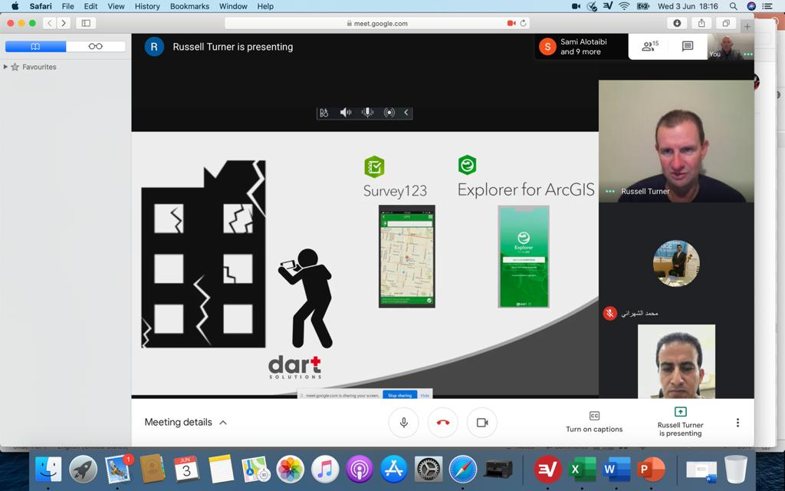
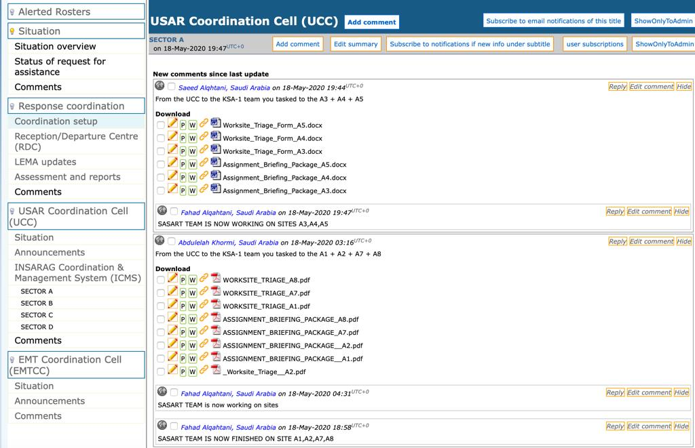
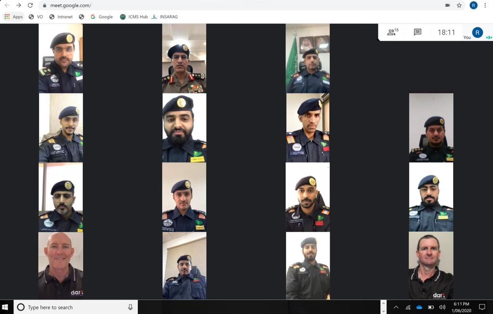
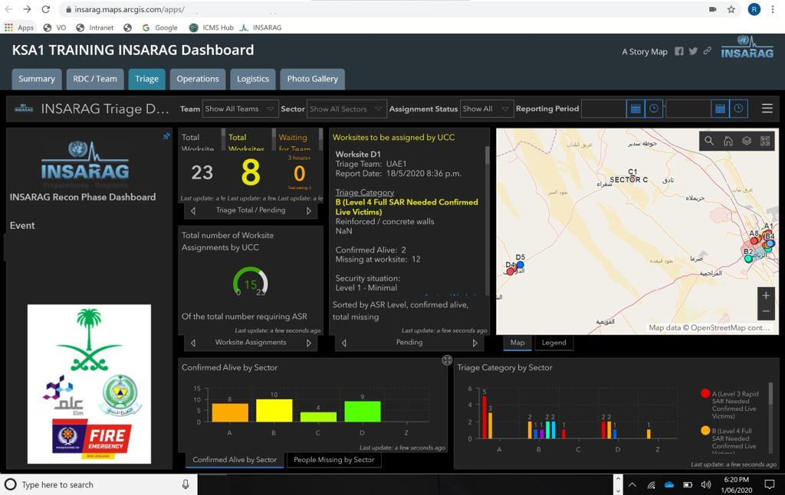
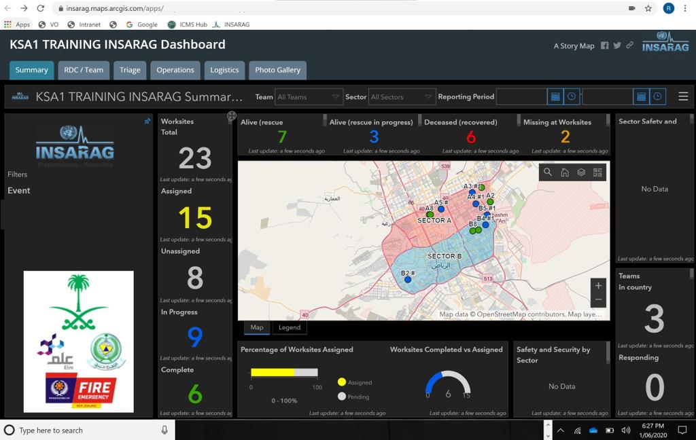

The Kingdom of Saudi Arabia has enabled the INSARAG community to gain the license required to access the new INSARAG Coordination Management System (ICMS).
The Saudi Arabia Search and Rescue Team (SASART), while preparing for the IER initially scheduled in December 2020, have recently completed the first of a series of online remote simulation exercises (SIMEX) using the new ICMS software.
Working with their strategic partner, DART Solutions, SASART has collectively demonstrated how quickly they can adapt to current circumstances, during this challenging time due to the COVID-19 emergency.
All relevant elements of the team involved in USAR coordination were exercised, including EXCON, RDC, UCC, command support, ASR2 and site commander personnel, Virtual OSOCC and relevant INSARAG forms. More than 20 SASART personnel took part in the virtual simulation exercise over three days while DART's personnel facilitated the exercise from more than 12,500 kilometers away with a 7-hour time difference.
The virtual SIMEX included setting up and integrating ICMS into the Virtual OSOCC, virtual arrival and RDC set up and operation, virtual LEMA meeting, virtual ASR2 of multiple sectors using multiple USAR teams, worksite triage, worksite prioritization, worksite assignment and worksite reporting culminating in a virtual LEMA briefing.
"Not only did the SIMEX provide an opportunity to practice USAR coordination, it provided an excellent platform to practice using the new ICMS software, a great system, so well done to the designers and developers! By all accounts, the exercise was an outstanding success! We look forward to participating in future virtual SIMEX's. " said, LT COL Mohammed Mubarak Alshahrani, Saudi Arabia INSARAG Policy Focal Point
 
 
